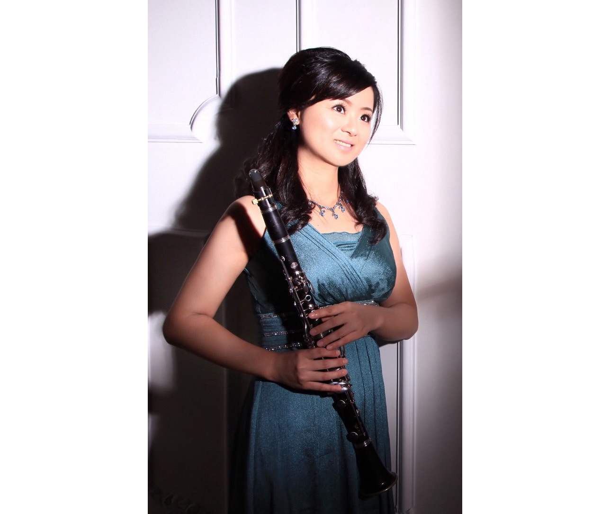
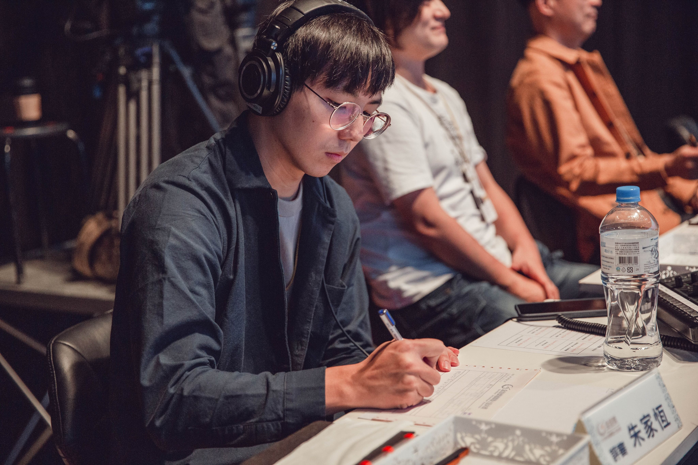
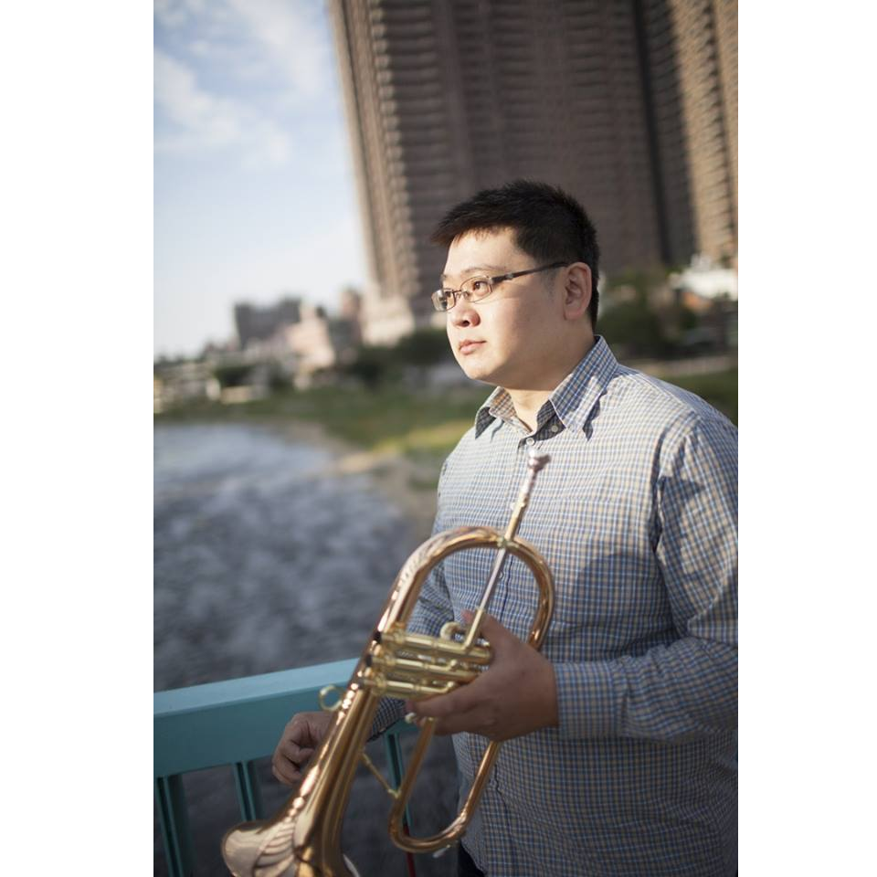

仁和中管樂團
Renhe Junior High School Wind Band
師資介紹
我們找來非常優秀的音樂家們，只為讓學生學到最好的。
蕭昀莉 老師
長笛

黃若栩 老師
豎笛
吳惠琪 老師
豎笛
廖約翰 老師
薩克斯風
陳昱伶 老師
小號
王邑東 老師
小號
王鈺成 老師
法國號
姜威霖 老師
長號
邱惠宇 老師
上低音號
楊朝翔 老師
低音號 / 上低音號
黃子臻 老師
擊樂

朱家恆 老師
行進擊樂

林昀佋 老師
行進樂隊
林祐民 助教
樂團助教